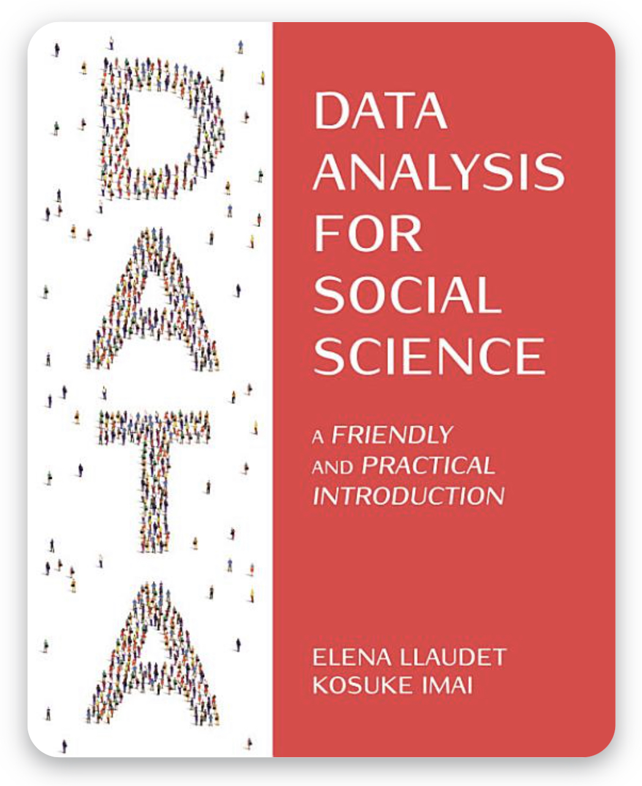

I am an Associate Professor with tenure in the Department of Political Science and Legal Studies at Suffolk University, Boston. I hold a Ph.D. in Government from Harvard University and a B.S. in Economic and Business Sciences from the University of Barcelona. My curriculum vitae is available here.
 My interests are political methodology, elections, and education. My research has been published in Legislative Studies Quarterly, Electoral Studies, Political Research Quarterly, and PS: Political Science & Politics. My latest publication, co-authored with Kosuke Imai, is Data Analysis for Social Science: A Friendly and Practical Introduction (Princeton University Press, 2022). This textbook provides an accessible introduction to survey research, predictive modeling, and causal inference, using the free and widely-used statistical software R. It assumes no prior knowledge of statistics or coding, and requires only minimal knowledge of math, making it ideal for beginners.
Since 2016, I have taught Data Analysis and Politics (POLS 201), an undergraduate quantitative-methods course for which I earned Suffolk's Innovative Teaching Award in 2022. Other honors include delivering Suffolk's Convocation Speech in 2022 and being nominated by Suffolk's Student Government Association for the Outstanding College of Arts and Sciences Faculty Member of the Year Award in 2021.
I am affiliated with Harvard University's Institute for Quantitative Social Science and the Center for American Political Studies. Previously, I served as a postdoctoral fellow in the Democracy Program at NYU School of Law's Brennan Center for Justice and as a visiting scholar at the Juan March Institute.